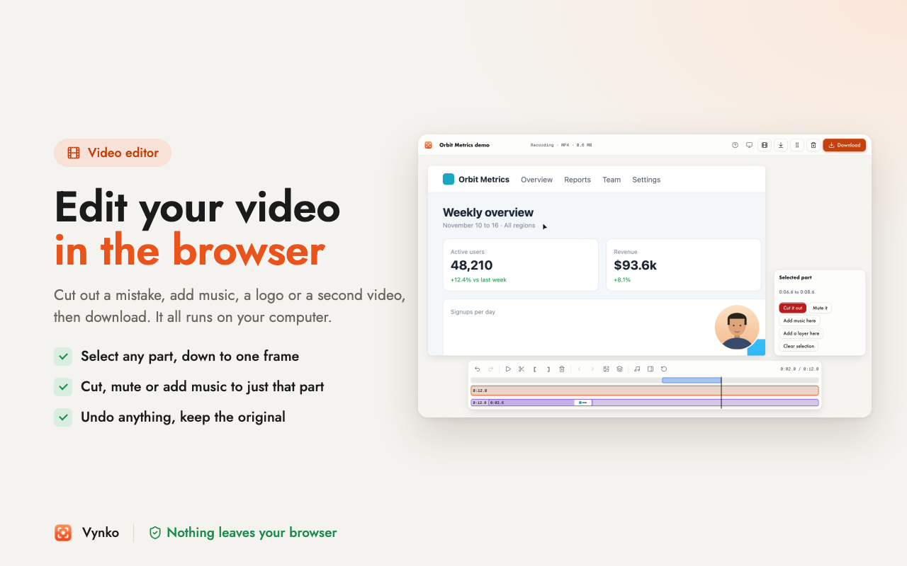
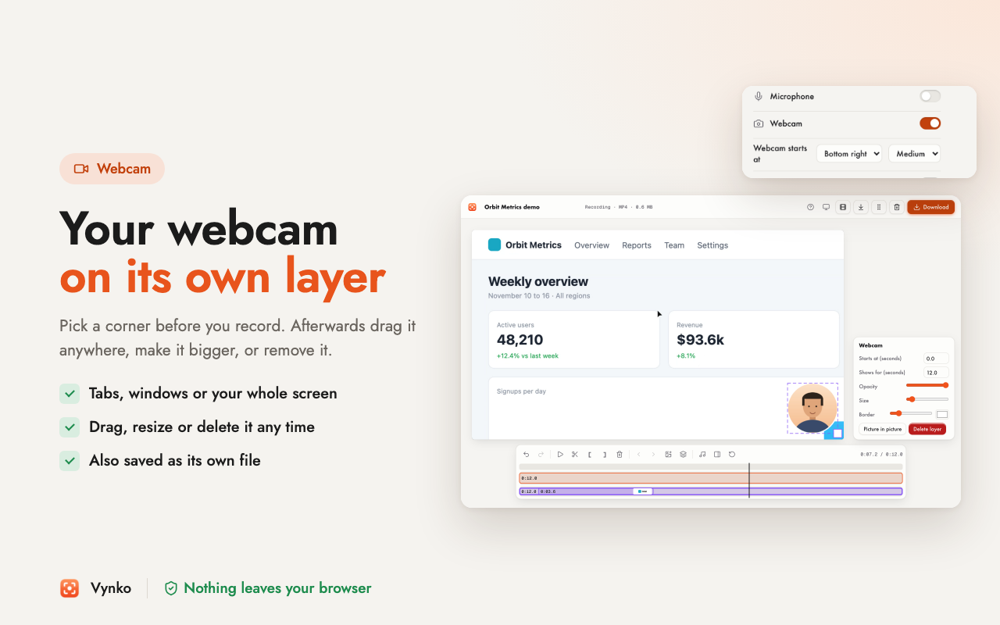

Chrome・Edge で使える無料の画面録画・スクリーンショットツール
Vynko はページ全体のスクリーンショットを撮り、画面を音声、マイク、Web カメラ付きで録画できます。動画はブラウザーの中でそのまま編集できます。失敗した部分をカットしたり、音楽やロゴを入れたり、Web カメラを好きな位置に動かしたりできます。個人情報のぼかしや、スクリーンショットへの注釈にも対応しています。無料で透かしも登録も不要、ネットワーク通信を一切行わないので、キャプチャした内容が端末の外に出ることはありません。
Chrome に追加 (無料) 使い方Windows、Mac、Linux、Chromebook の Google Chrome、Microsoft Edge、その他の Chromium ブラウザーで動作します。30 の言語に対応しています。
スクリーンショット
録画

Vynko でできること
- ページ全体のスクリーンショットページ全体をスクロールしてつなぎ合わせます。遅延読み込みの画像や、Gmail や Slack のように内部のパネルがスクロールするアプリにも対応しています。
- あらゆるスクリーンショット表示範囲、選択範囲、別のウィンドウ、画面全体を撮影できます。PNG、JPG、WebP に対応しています。
- 画面録画タブ、タブの一部、任意のウィンドウ、画面全体を 720p、1080p、4K で録画できます。
- 音声、マイク、Web カメラタブの音声、音量メーター付きの自分の声、好きな隅に置ける丸い Web カメラのバブルを録画に入れられます。
- 動画エディター録画の好きな部分をフレーム単位で選び、その部分だけをカット、ミュートしたり、音楽や画像を入れたりできます。
- Web カメラは独立したレイヤー録画した後でも、Web カメラを好きな場所に動かしたり、サイズを変えたり、消したりできます。
- レイヤーと音楽ロゴや写真、別の動画を上に重ねたり、BGM を入れたりできます。どの操作も元に戻せます。
- 元の映像はいつでも残るどれだけ編集しても、「元の録画を保存」で手を加えていない録画と、別ファイルの Web カメラ映像が手に入ります。
- GIF 作成直接 GIF で録画するか、動画を小・中・大の GIF に変換できます。ファイルサイズの目安も表示されます。
- 注釈矢印、四角形、円、テキスト、蛍光ペン、番号付きステップ、ステッカー、切り抜きが使えます。
- 個人情報をぼかす手動で好きな部分をぼかせるほか、ページ上のメールアドレスと電話番号をワンクリックでまとめてぼかせます。
- タイマーキャプチャまで 3 秒、5 秒、10 秒待つので、その間にメニューを開いておけます。
- ファイル名を自由にページのタイトル、サイト、日付、時刻をファイル名に使い、好きなフォルダーに保存できます。
Vynko の使い方
Chrome でページ全体のスクリーンショットを撮る方法
- Chrome ウェブストアから Vynko を追加し、ツールバーに固定します。
- ページを開き、Vynko のアイコンをクリックして ページ全体 を選ぶか、Alt+Shift+F を押します。
- Vynko がページをスクロールし、固定ヘッダーが繰り返し写らないように隠して、結果をエディターで開きます。ダウンロード または コピー をクリックします。

Chrome で画面を音声付きで録画する方法
- Vynko のアイコンをクリックして 録画 を開きます。
- このタブを音声付きで録画するなら タブ、タブの一部なら 範囲指定、任意のウィンドウや画面全体なら 選択 を選びます。
- マイク をオンにすると自分の声が、Web カメラ をオンにするとカメラのバブルが入ります。最初に置く隅とサイズを選べます。
- もう一度アイコンをクリックして 停止 を押します。動画がエディターで開き、編集して MP4 または WebM でダウンロードできます。
画面を GIF で録画する方法
録画 で形式を GIF にして、いつもどおり録画します。または動画を録画してから、エディターで GIF をクリックし、小 (480 px)、中 (640 px)、大 (960 px) から選びます。保存する前に、各サイズのファイルサイズの目安が表示されます。
画面録画をトリミング・カット・編集する方法
- クリップか、その上にある細いルーラーをドラッグして範囲を選びます。始めたい位置で [、終わりたい位置で ] を押しても選べます。, と . で 1 フレームずつ移動できます。
- 切り取る で削除、ミュートする で無音にします。ここに音楽を追加 や ここにレイヤーを追加 を使えば、その部分だけに曲やロゴ、別の動画を入れられます。
- S でクリップを 2 つに分割し、プレビュー上でレイヤーをドラッグして配置します。どの操作も Ctrl+Z で元に戻せます。
- ダウンロード をクリックします。編集前の録画がほしいときは、いつでも 元の録画を保存 が使えます。

Web カメラを動かす、サイズを変える、消す方法
Vynko は Web カメラを動画に焼き込まず、独立したレイヤーとして録画します。エディターで、プレビュー上の丸い Web カメラをクリックします。ドラッグすると移動、角をドラッグすると拡大・縮小、レイヤーを削除 をクリックすると削除できます。保存前に編集をオフにした場合や GIF で録画した場合は、選んだ隅に Web カメラが動画の中に描き込まれます。

別のウィンドウや画面全体のスクリーンショットを撮る方法
スクリーンショット で ウィンドウ を選び、ブラウザーの共有画面でウィンドウまたは画面を選びます。画像がエディターで開きます。
スクリーンショットのメールアドレスや電話番号をぼかす方法
スクリーンショットを撮ります。ページにメールアドレスや電話番号がある場合、エディターに 個人情報をぼかす が表示されます。ワンクリックですべて隠せます。名前、キー、カード番号など、それ以外の部分は ぼかし ツールをドラッグして隠せます。

キーボードショートカット
| 操作 | Windows、Linux、ChromeOS | Mac |
|---|---|---|
| 表示範囲のスクリーンショット | Alt+Shift+V | Option+Shift+V |
| ページ全体のスクリーンショット | Alt+Shift+F | Option+Shift+F |
| 選択範囲のスクリーンショット | Alt+Shift+A | Option+Shift+A |
| タブの録画を開始/停止 | Alt+Shift+R | Option+Shift+R |
chrome://extensions/shortcuts で変更できます。
プライバシーを最優先した設計
私は Vynko のためのサーバーを一切運用していないため、あなたのデータの送り先はどこにもありません。拡張機能にはアクセス解析、広告、トラッキングがなく、インターネットからコードを読み込むこともありません。ホスト権限も要求せず、コンテンツ セキュリティ ポリシーではローカルの blob URL と data URL への接続のみが許可されています。Web カメラとマイクの映像や音声は、保存する録画にのみ使われます。
Vynko はネットワーク通信を一切行いません。スクリーンショットも録画も編集も、すべてパソコンの中で行われ、オフラインでも動きます。
ご自身で確認できます: Vynko のポップアップを右クリックして「検証」を選び、Network タブを開いてから、スクリーンショットを撮って短い動画を録画してください。Network タブには何も表示されません。

プライバシーポリシーと利用規約 の全文をお読みください。
使い方ガイド
- Chromeのタブをワンクリックでスクショ今のタブに見えているものを、ブラウザのバーを除いてそのまま撮影。書き込みをして、個人情報をぼかし、保存やコピーができます。
- どんなサイトでもページ全体をスクリーンショットVynkoがページを自動でスクロールし、遅れて読み込まれる画像を待ち、固定ヘッダーが繰り返し写らないよう隠して、全体を1枚の縦長画像につなげます。
- どんなウィンドウやアプリでもスクリーンショットWebページだけではありません。ブラウザの共有画面を使って、別のブラウザウィンドウ、デスクトップアプリ、今見ていないタブも撮影できます。
- 画面全体をスクリーンショットモニターに映っているものをすべて撮影できます。デスクトップ、すべてのウィンドウ、タスクバーまで撮って、エディタで切り抜きや書き込みができます。
- 音声付きで画面を録画タブをそのタブの音声付きで、ウィンドウや画面全体をシステム音声付きで録画し、マイクで自分の声も入れられます。音量バーが動くので、音が入っているかその場で確認できます。
- Webカメラ付きで画面を録画タブ、ウィンドウ、画面の録画に丸いWebカメラの枠を追加して、あとからエディタで移動、サイズ変更、削除ができます。
Vynko とほかのツールの比較
| Vynko | 一般的な無料の画面録画ツール | |
|---|---|---|
| 料金 | 無料、有料プランなし | 制限付きの無料プラン |
| 透かし | なし | 無料プランでは入ることが多い |
| アカウント | 不要 | たいてい必要 |
| ファイルの保存先 | お使いの端末のみ | 提供元のクラウドにアップロードされることが多い |
| 時間制限 | なし | 5～15 分のことが多い |
| 動画編集 | 内蔵、端末上で完結 | オンラインや有料のことが多い |
| ネットワーク通信 | なし | アップロード、アクセス解析、アカウント同期 |
よくある質問
Vynko は本当に無料で、透かしも入りませんか?
はい。広告、透かし、時間制限、有料プランはありません。役に立ったと感じたら、任意の寄付リンクもあります。
Vynko は録画やスクリーンショットをアップロードしますか?
いいえ。キャプチャはブラウザー内で作成され、お使いの端末に保存されます。
アカウントは必要ですか?
いいえ。登録もログインも不要です。
システムの音声も録音できますか?
タブの録画にはそのタブの音声が入ります。「選択」でウィンドウや画面を選ぶと、Windows と ChromeOS ではブラウザーの共有画面でシステムの音声を含めるかどうかを選べます。Mac で録音できるのは、タブの音声とマイクだけです。
画面と一緒に Web カメラも録画できますか?
はい。録画タブで「Web カメラ」をオンにし、最初に置く隅とサイズを選んでください。Web カメラは独立したレイヤーなので、エディターで好きな場所に動かしたり、サイズを変えたり、消したりできます。
動画の一部分だけを編集できますか?
はい。タイムライン上をドラッグして、1 フレーム単位で範囲を選びます。そのうえで、その部分だけをカット、ミュートしたり、音楽や画像を入れたりできます。
編集した後でも元の録画を取り出せますか?
はい。エディターにはいつでも「元の録画を保存」があります。録画をそのままの状態でダウンロードでき、Web カメラも別ファイルで保存されます。
ファイルはどこに保存されますか?
Downloads フォルダー、または「設定」で選んだその中のフォルダーに保存されます。
オフラインで使えますか?
はい。必要なものはすべて拡張機能に含まれています。
Microsoft Edge でも使えますか?
はい。Vynko は Chrome、Edge、その他の Chromium ブラウザーで動作します。
不具合の報告や機能のリクエストはどうすればよいですか?
mishravinay112@gmail.com までメールでお送りください。